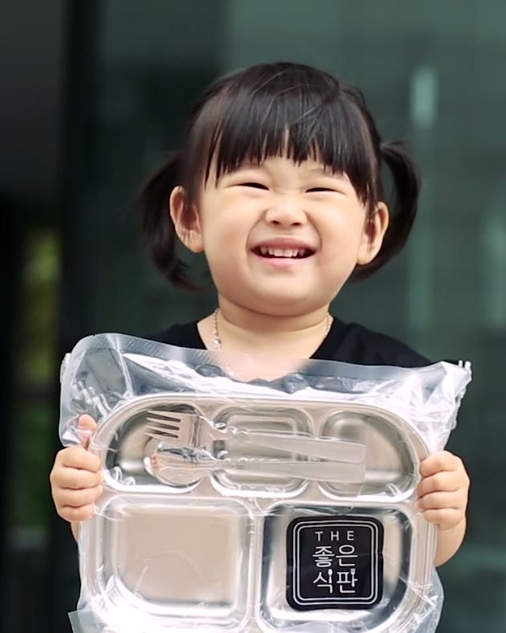
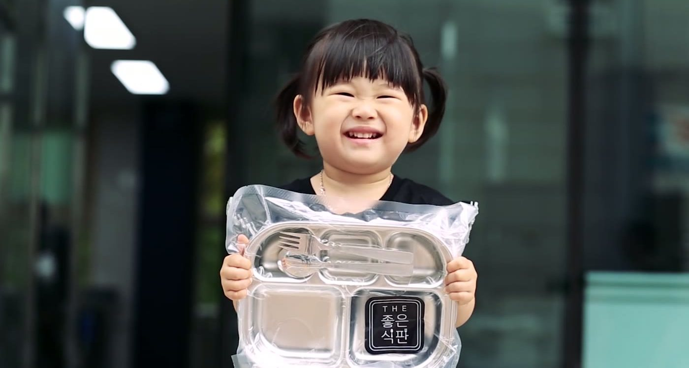
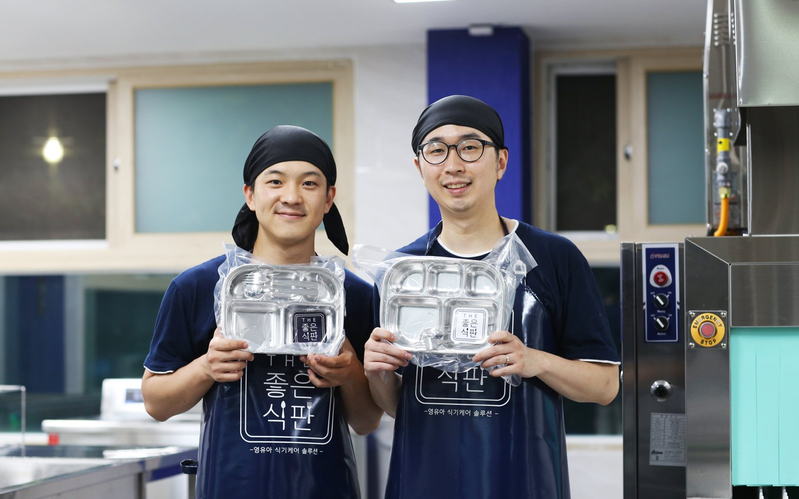

아이가 매일 쓰는 식판,
세제 한 방울도 남기지 않습니다.
어린이집 식판을 매일 가져와 80℃ 고온수부터 120℃ 살균 건조까지 6단계 살균 세척을 거친 뒤, 진공 포장해 원으로 다시 보내드립니다.

원이 도입을 정하면,
신청과 결제는 학부모님이 아이별로
어린이집·유치원이 THE 좋은식판을 도입하면, 학부모님이 우리 아이 몫을 신청하고 결제합니다. 세척 공정도, 위생검사도 같습니다.

원이 도입한 뒤, 우리 아이 몫만 신청하고 결제해요
원에서 THE 좋은식판을 도입했다면 아이가 다니는 원을 검색해 신청하면 됩니다. 우리 아이 몫의 식기가 매일 진공 포장으로 원에 도착합니다.
- 원 이름 검색 후 3분이면 신청 완료
- 식판, 수저·포크, 간식기까지 한 세트
- 키즈노트 스마트주문으로도 신청 가능
- 아직 도입 전인 원이라면 선생님께 저희를 알려주세요

설거지와 소독, 보관 부담을 통째로 덜어드립니다
식기는 저희가 준비하고, 살균 세척과 진공 포장, 매일 배송까지 맡습니다. 도입을 정하시면 학부모님 안내와 개별 신청 접수까지 함께 합니다.
- 급식 후 설거지·소독·건조 업무 해소
- 정기 위생검사 결과지 제공
- 광명 · 화성 · 인천·시흥 · 천안 서비스
설거지가 끝나도
세제는 식판에 남습니다.
가정에서든 원에서든 손 설거지로는 세제를 완전히 씻어내기 어렵습니다. 아이는 그 식판으로 하루 세 번 밥을 먹습니다.
THE 좋은식판은 세제에 기대지 않습니다. 80℃ 고온수, 초음파, 고압 헹굼, 120℃ 건조가 세제의 자리를 대신합니다.
아이 한 명이 1년 동안 삼키게 되는 세제의 양, 소주잔 2컵 (50ml 기준)
출처: 충남대학교 환경공학과 서동일 교수 연구
6단계 살균 세척 공정
사람 손으로는 할 수 없는 온도와 압력으로, 눈에 보이지 않는 잔류물까지 걷어냅니다.
고온수 세척
모든 세척과 헹굼을 80℃ 이상 고온수에서 진행합니다.
80℃ 이상수류 불림 세척
수류 펌핑 세척기의 고온수에 불려 굳은 오염을 떼어냅니다.
1차 불림 세척초음파 버블 세척
손이 닿지 않는 미세한 틈까지 초음파 버블로 씻어냅니다.
미세 오염 제거고온·고압 헹굼
대형 세척기에서 3차에 걸친 고온 고압 헹굼을 추가로 진행합니다.
3차 헹굼고온 살균 건조
120℃ 이상 고온 건조로 식중독균까지 사멸시킵니다.
120℃ 이상위생 점검·진공 포장
고온 살균과 전수 위생 점검을 마친 식기를 진공 포장해 당일 배송합니다.
당일 배송세척 공장을 영상으로 보여드립니다
회수된 식판이 6단계 공정을 거쳐 진공 포장되기까지, 편집 없이 전 과정을 담았습니다.
검사 항목과 결과는 실제 결과지를 기준으로 원에 전달됩니다.
말이 아니라
검사지로 증명합니다.
교육·보육기관 안전 기준에 맞춘 정기 위생검사를 시행하고, 그 결과를 원에 그대로 전달합니다. 학부모 문의에 원에서 결과지로 바로 답하실 수 있습니다.
- 정기 위생검사 결과지 제공
- 교육·보육기관 안전 기준 적용
- 검사 항목과 수치 그대로 공개
먼저 써 본 분들의 이야기
아래 문구는 자리 잡기용 예시입니다. 실제 학부모·원장님 후기로 교체합니다.
아이 식판을 매일 진공 포장으로 받으니 집에서 씻어 보낼 때보다 훨씬 마음이 놓여요. 검사 결과지도 원에서 보여주셨어요.
급식 후 설거지와 소독에 쓰던 시간이 통째로 사라졌습니다. 선생님들이 아이들에게 더 집중할 수 있게 됐어요.
학부모 상담 때 위생검사 결과지를 그대로 보여드릴 수 있어서 설명이 쉬워졌습니다.
아이에게 좋은 방법이
지구에도 좋아야 합니다.
일회용을 쓰지 않고, 세제에 기대지 않고, 환경경영 기준으로 운영합니다.
다시 쓰는 식판
일회용 식기를 쓰지 않습니다. 스테인리스 식판을 살균 세척해 매일 다시 씁니다.
세제 대신 물과 온도
고온수와 초음파, 고압 헹굼이 세제의 역할을 대신합니다. 아이 몸에도, 물에도 부담을 줄입니다.
환경경영 인증 사업장
식기 케어 서비스 전 과정이 ISO 14001 환경경영시스템 인증을 받았습니다. AI 식기세척 장치 특허도 2건 등록했습니다.
우리 아이 식판부터 바꿔주세요
신청은 3분이면 충분합니다. 궁금한 점은 카카오톡으로 편하게 물어보세요.
키즈노트 스마트주문으로도 신청하실 수 있습니다.